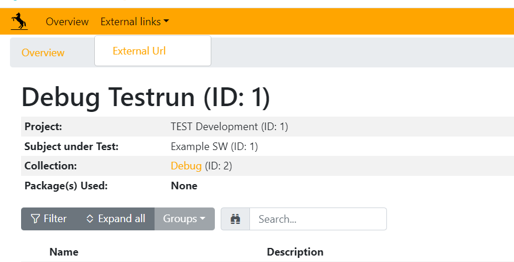
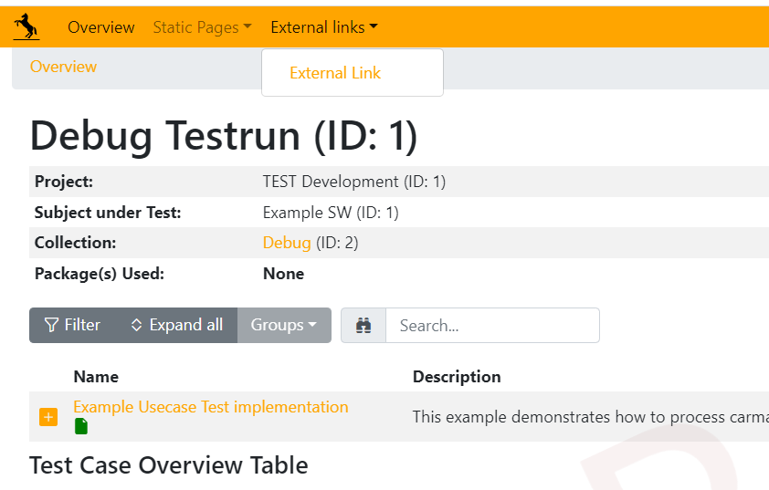

TSF Report - External Links#
Test Scripting Foundation (TSF) supports customizing the report by linking to an external URLs. This allows to reference an external/custom page in the generated report through which the reader of the report can open a HTML page that is not generated by TSF and either added to the report zip by an application specific process or is external (outside tsf report).
A typical use case for this feature would be redirecting the readers of the report to other reports or references that relate to the TSF report.
The following screenshot shows an example of how the external link shows up in the menu of a customized TSF report.
Adding External URLs to the report#
Adding an external link is done by deriving from two case classes.
1. Create a class that derives from ExternalLink class. The ExternalLink class has external_link_report as a class parameter that takes an object of class CustomReportExternalLink as the value which extends the reporting.
class ExternalLinkPageClass(ExternalLink):
"""Example external link page."""
external_link_report = ExternalLinkReportClass
You can import the class from tsf.core.testcase,
from tsf.core.testcase import ExternalLink
Now, create a reporting class that derives from CustomReportExternalLink class and provide the values for the name and link.
class ExternalLinkReportClass(CustomReportExternalLink):
"""This is just an example class"""
name = "<Name of the external page>"
link = "<Link to the external page>"
You can import the class from tsf.core.report,
from tsf.core.report import CustomReportExternalLink
Note
The CustomReportExternalLink class has two parameters name and link used to take the text to be displayed in the External Links dropdown on the overview page in the report and take the URL on which the report user would be routed when clicked respectively.
Hint
You can actually use CustomReportExternalLink and extend statistics and static pages with external links. You can read more about it in the next section.
Adding External URLs through Statistics and Static page#
You can extend a statistics page or a static page with some additional information via an external link. This can be achieved by creating a report class that extends the CustomReportStaticReportContents and CustomReportExternalLink together.
class StaticPageReportClass(CustomReportStaticReportContents, CustomReportExternalLink):
"""Example static page."""
name = "<Static Page Name>"
CustomReportExternalLink.name = "<External Link Page Name>" # If static page and external link for this page is to be displayed with a different name.
link = "<Link to the URL>"
def overview(self) -> str:
return "Static Demo Page"
Then, we would have Statistics drop together with External Links drop-down,
Note
When extending a custom report class with CustomReportStaticReportContents and CustomReportExternalLink, parameter name for CustomReportExternalLink should be prefixed with CustomReportExternalLink to avoid ambiguity with the name parameter of the custom report class of static or statistics page.